전자기사 (2003-03-16 기출문제)
1과목: 전기자기학
1. 변위전류와 가장 관계가 깊은 것은?
- 반도체
- 유전체
- 자성체
- 도체
(정답률: 알수없음)

2.
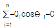
(일정)이란 전기력선 방정식이 성립할 수 있는 조건 중 틀린 것은?- 점전하 Qi가 일직선상에 있어야 한다.
- 점전하 Qi가 시간적으로 불변이어야 한다.
- 상수 C는 주위 매질에 관계없이 일정하다.
- 점전하의 주위공간은 유전률이 같아야 한다.
(정답률: 알수없음)
3. 쌍극자 모멘트가 M[C.m]인 전기쌍극자에 의한 임의의 점 P의 전계의 크기는 전기쌍극자의 중심에서 축방향과 점 P를 잇는 선분사이의 각이 얼마일 때 최대가 되는가?
- 0
- π/2
- π/3
- π/4
(정답률: 알수없음)
4. 공간 도체내의 한점에 있어서 자속이 시간적으로 변화하는 경우에 성립하는 식은?
- Curl
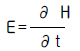
- Curl
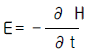
- Curl
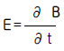
- Curl
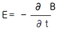
(정답률: 알수없음)
5. 자계의 세기 H[AT/m], 자속밀도 B[Wb/m2], 투자율 μ[H/m]인 곳의 자계의 에너지 밀도는 몇 Ｊ/m3 인가?
- BH
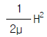
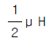
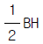
(정답률: 60%)
6. 자유공간 중에서 전위 V=xyz[V]일 때 0≤x≤1, 0≤y≤1, 0≤z≤1인 입방체에 존재하는 정전에너지는 몇 Ｊ 인가?
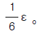
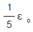
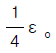
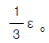
(정답률: 알수없음)
7. 원통좌표계에서 전류밀도 ｊ = Kr2az [A/m2]일 때 암페어의 법칙을 사용하여 자계의 세기 H 를 구하면? (단, K는 상수이다.)
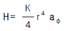
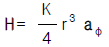
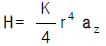
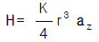
(정답률: 알수없음)
8. 단면적 S, 평균반지름 r, 권회수 N인 토로이드코일에 누설자속이 없는 경우, 자기인덕턴스의 크기는?
- 권선수의 자승에 비례하고 단면적에 반비례한다.
- 권선수 및 단면적에 비례한다.
- 권선수의 자승 및 단면적에 비례한다.
- 권선수의 자승 및 평균 반지름에 비례한다.
(정답률: 알수없음)
9. 철심이 들어있는 환상코일에서 1차코일의 권수가100회일 때 자기인덕턴스는 0.01H이었다. 이 철심에 2차코일을 2000회 감았을 때 2차코일의 자기인덕턴스와 상호인덕턴스는 각각 몇 H 인가?
- 자기인덕턴스: 0.02, 상호인덕턴스: 0.01
- 자기인덕턴스: 0.01, 상호인덕턴스: 0.02
- 자기인덕턴스: 0.04, 상호인덕턴스: 0.02
- 자기인덕턴스: 0.02. 상호인덕턴스: 0.04
(정답률: 알수없음)
10. 분극 중 온도의 영향을 받는 분극은?
- 전자분극(electronic polarization)
- 이온분극(ionic polarization)
- 배향분극(orientational polarization)
- 전자분극과 이온분극
(정답률: 알수없음)
11. 그림과 같은 자기회로에서 R1, R2, R3는 각 회로의 자기 저항이고 Φ1, Φ2, Φ3는 각각 R1, R2, R3 에 투과되는 자속이라 하면 Φ3 의 값은? (단, R1⇒
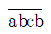
, R2⇒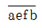
, R3⇒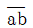
이다.)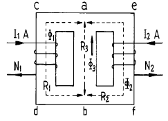
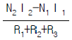
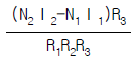
- (N2I2-N1I1)R1R2
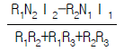
(정답률: 알수없음)
12. 내원통의 반지름 a, 외원통의 반지름 b인 동축원통 콘덴서의 내외 원통사이에 공기를 넣었을 때 정전용량이 Co이었다. 내외 반지름을 모두 3배로 하고 공기대신 비유전률 9 인 유전체를 넣었을 경우의 정전용량은?
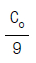
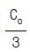
- Co
- 9Co
(정답률: 알수없음)
13. 내압이 1㎸이고 용량이 각각 0.01㎌, 0.02㎌, 0.04㎌인 콘덴서를 직렬로 연결했을 때 전체 콘덴서의 내압은 몇 V 인가?
- 1750
- 2000
- 3500
- 4000
(정답률: 알수없음)
14. 그림에서 ℓ =100cm, S=10cm2, μs=100, N=1000회인 회로에 전류 Ｉ=10A를 흘렸을 때 저축되는 에너지는 몇 Ｊ 인가?
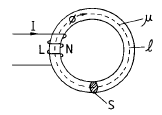
- 2πx10-1
- 2πx10-2
- 2πx10-3
- 2π
(정답률: 알수없음)
15. 반지름 a[m]의 원판형 전기 2중층의 중심축상 x[m]의 거리에 있는 점 P(+전하측)의 전위는 몇 V 인가? (단, 2중층의 세기는 M[C/m]이다.)
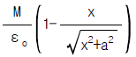
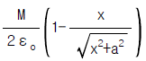
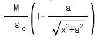
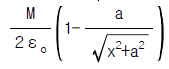
(정답률: 알수없음)
16. 반지름 a인 원형코일의 중심축상 r[m]의 거리에 있는 점 P의 자위는 몇 A 인가? (단, 점 P에 대한 원의 입체각을 ω, 전류를 Ｉ[A]라 한다.)
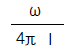
- 4πωＩ
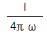
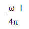
(정답률: 알수없음)
17. 한변의 길이가 ℓ인 정사각형 도체에 전류 Ｉ[A]가 흐르고 있을 때 중심점 P의 자계의 세기는 몇 A/m 인가?
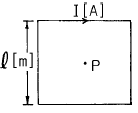
- 16πℓ Ｉ
- 4πℓ Ｉ
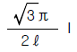
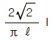
(정답률: 알수없음)
18. 유전체 역률(tanδ)과 무관한 것은?
- 주파수
- 정전용량
- 인가전압
- 누설저항
(정답률: 20%)
19. 자기회로의 자기저항에 대한 설명으로 옳은 것은?
- 자기회로의 길이에 반비례한다.
- 자기회로의 단면적에 비례한다.
- 비투자율에 반비례한다.
- 길이의 제곱에 비례하고 단면적에 반비례한다.
(정답률: 알수없음)
20. 다음 사항 중 옳은 것은?
- 텔레비젼(TV)은 전자를 발생시키는 전자총과, 전계를 걸어 전자의 방향을 구부러지게 하는 편향코일과 전자가 면에 부디치면 특정한 색깔을 내는 금속이 칠해져 있는 브라운관을 구비하고 있다.
- 자석을 영어로 마그넷트(magnet)라고 하는 이유는 고대 희랍의 마그네시아라고 불리워지는 지방에서 철을 흡인하는 돌이 취해졌기 때문이다.
- 모피(毛皮)로 호박(amber, 琥珀)을 마찰하면 그 에너지를 받아 모피에서 음전기를 띤 자유전자가 호박으로 옮겨져, 모피는 음(-)전기를 띠고 호박은 양전기(+)를 띤다.
- 쿨롱은 전계와 자계의 세기 및 음극선의 구부러지는 정도에서 전자의 비전하(전하량/질량)를 계산하였다.
(정답률: 알수없음)
2과목: 회로이론
21. α { f(t)} = F(S)일 때
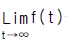
는?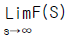
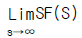
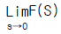
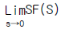
(정답률: 알수없음)
22. 대칭 4단자 회로망의 영상 임피던스는?
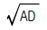
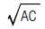
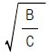
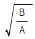
(정답률: 알수없음)
23. 다음 회로망은 T형 회로 및 π 형 회로의 종속 접속으로 이루어졌다. 이 회로망의 ABCD parameter 중 잘못 구하여 진것은?
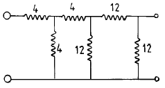
- A = 7
- B = 48
- C = 6
- D = 7
(정답률: 알수없음)
24. 단위 계단함수 U(t)와 지수 e-t의 컨볼루션 적분은?
- e-t
- 1 / e-t
- 1 - e-t
- 1 + e-t
(정답률: 알수없음)
25. 상수 1의 라플라스 역변환은?
- μ (t)
- t
- δ (t)
- r(t)
(정답률: 42%)
26. 역률 80[%], 부하의 유효전력이 80[kW]이면 무효전력은?
- 20 [K Var]
- 40 [K Var]
- 60 [K Var]
- 80 [K Var]
(정답률: 46%)
27. 페이저도가 다음 그림과 같이 주어졌을 때 이 페이저도에 일치하는 등가 임피던스는?
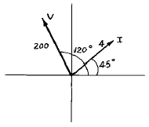
- 12.9 + j48.3
- -25 + j43.3
- 25 + j43.3
- 2.8 + j2.8
(정답률: 알수없음)
28. 다음 그림과 같은 4단자 회로의 어드미턴스 파라미터의 Y22는?
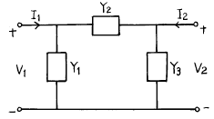
- Y1+Y2
- Y2+Y3
- Y3
- Y2
(정답률: 알수없음)
29. R = 100 Ω , L = 25.3 mH, C = 100 μ F 인 R-L-C 회로에 V=100√2 sinω t인 전압을 인가할 때 위상각은? (단,f=100Hz)
- -30°
- 0°
- 30°
- 60°
(정답률: 알수없음)
30. 컷 셋(cut-set)의 구성 요소는?
- 하나의 나무가지(tree branch)와 링크(link)들
- 루프(loop)와 분기((branch)
- 접속점(node)과 루프
- 링크(link)와 루프
(정답률: 알수없음)
31. 그림에 표시한 회로의 임피던스가 R이 되기 위한 조건은?
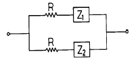
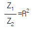
- Z1Z2=R2
- Z1Z2=R
(정답률: 알수없음)
32. 두 회로간에 쌍대 관계가 옳지 않은 것은?
- K· V· L → K· C· L
- 테브낭 정리 → 노튼 정리
- 전압원 → 전류원
- 폐로전류 → 절점전류
(정답률: 알수없음)
33. 선형 회로망에 가장 관계가 있는 것은?
- 키르히호프의 법칙
- 테브난의 정리
- 중첩의 정리
- 보상의 정리
(정답률: 알수없음)
34. 이상 변압기의 권선비는?
(정답률: 알수없음)
35. S-평면상에 영점(0)과 극(x)이 그림과 같이 표현되는 함수는?
- 단위계단 함수
- sin ω t
- e-α tsinω t
- e-α tcosω t
(정답률: 알수없음)
36. R-L-C 직렬회로에 t＝0 인 순간, 직류전압을 인가한다면 2계 선형 미분방정식은?
(정답률: 알수없음)
37. 다음 그림과 같은 구형파(square wave)의 실효값은?
(정답률: 37%)
38. 이상적인 변압기의 권수비(ratio of turns) n을 표현한 것으로 옳지 않은 것은?
(정답률: 알수없음)
39. 저항 3Ω과 리액턴스 4Ω을 병렬 연결한 회로의 역률은?
- 0.2
- 0.4
- 0.6
- 0.8
(정답률: 알수없음)
40. 다음 회로에 중첩의 정리를 써서 2[Ω ]의 저항에 흐르는 전류 i를 구하면?
- 2[A]
- -0.6[A]
- 1.4[A]
- -1.4[A]
(정답률: 알수없음)
3과목: 전자회로
41. 다음과 같은 이득이 A인 연산증폭기 회로에서 출력전압 Vo를 나타내는 것은?(단, Vi는 입력 신호 전압이다.)
- RCVi
(정답률: 알수없음)
42. 다음 회로에서 Ico에 대한 Ic의 안정계수는?
- β
- β + 1
- β Rb
- β Rc/Rb
(정답률: 알수없음)
43. 다음 회로에서 C1, C2, C3의 리액턴스가 신호 주파수에서 매우 적은 경우 콘덴서 C3를 제거 한다면?
- 이득증가
- 이득감소
- 발진한다.
- 변동없다.
(정답률: 알수없음)
44. 다음 회로에서 전압 이득을 구하면? (hie = 1[㏀], β = hfe = 50, VBE = 0.7V)
- Av = 4.8
- Av = -3.3
- Av = -4.8
- Av = 3.3
(정답률: 알수없음)
45. computer가 외부와 교류하여 상호 정보교환을 하는 데는 interrupt, polling, DMA, I/O등이 있다. 이들의 총칭은?
- Arithmetics
- Interface
- Halt
- Control
(정답률: 알수없음)
46. 트랜지스터의 밀러(Miller)입력 저항 성분은 주파수가 0에서 fH까지 증가함에 따라 어떻게 되는가? (단, fH:High 3㏈ 주파수)
- 줄어든다.
- 증가한다.
- 변화하지 않는다.
- 감소하다 증가한다.
(정답률: 알수없음)
47. 궤환 회로를 포함한 직렬형 정전압 회로의 특징을 잘못 기술한 것은?
- 부하가 가벼울 때의 효율은 병렬형에 비하여 휠씬 크다.
- 출력 전압의 넓은 범위에 걸쳐 쉽게 설계할수 있다.
- 증폭단을 증가시킴으로써 출력저항을 크게할수 있다.
- 증폭단을 증가시킴으로써 전압안정 계수를 매우 작게 할수 있다.
(정답률: 알수없음)
48. 궤환증폭회로에서 전압증폭도 라 할 때 부궤환의 조건은?(단, A는 부궤환시의 증폭도이다.)
- |1 - Aβ |＜ 1
- Aβ = ∞
- Aβ = 1
- | 1 - Aβ | ＞ 1
(정답률: 알수없음)
49. 궤환 발진기의 바크하우젠(Barkhausen)의 발진 조건은?
- β A = ∞
- β A = 0
- β A = 1
- β A ≤ 1
(정답률: 알수없음)
50. PN접합 다이오드의 온도와 역포화 전류와의 관계를 올바르게 나타낸 것은?
- 역포화 전류는 온도가 10[℃ ]증가함에 따라 직선적으로 감소한다.
- 역포화 전류는 온도에 관계없이 항상 일정하다.
- 역포화 전류는 온도가 10[℃] 증가함에 따라 직선적으로 증가한다.
- 온도가 10[℃] 증가할 때마다 역포화 전류는 약 2배씩 증가한다.
(정답률: 20%)
51. 트랜지스터 컬렉터 누설 전류가 주위온도 변화로 1.6[㎂] 에서 160[㎂]로 증가되었을 때 컬렉터 전류의 변화가 1[㎃]라 하면 안정률은 약 얼마인가?
- 1
- 6.3
- 16
- 10π
(정답률: 알수없음)
52. 다음과 같은 comparator 회로에서 입력에 정현파를 인가하면 출력파형은?
- 구형파형
- 정현파형
- ramp 파형
- 톱니파형
(정답률: 알수없음)
53. 저주파 전력 증폭기의 출력 측 기본파 전압이 100[V] 제2 및 제3 고조파 전압이 각 각 4[V]와 3[V]라면 이 경우의 왜율은?
- 5 %
- 10 %
- 15 %
- 20 %
(정답률: 34%)
54. 부궤환 증폭기의 특성으로 옳지 않은 것은?
- 잡음이 1/1-β A 만큼 감소한다.
- 이득이 1/1-β A로 감소한다.
- 주파수 대역이 1/1-β A로 좁아진다.
- 안정도가 1/1-β A 만큼 개선된다.
(정답률: 알수없음)
55. 그림회로에서 V2에 해당되는 출력 전압을 나타낸 식은?
(정답률: 알수없음)
56. 그림의 논리 다이어그램이 나타내는 논리식은?
- Z = X+Y
- Z = X·Y
(정답률: 알수없음)
57. 710을 그레이 코드(gray code)로 변환하면?
- 0100
- 0101
- 1010
- 0010
(정답률: 알수없음)
58. ECL 회로의 특징을 설명한 것 중 옳지 않은 것은?
- 이 회로의 출력은 각각 OR, NAND 출력이 된다.
- 출력 임피던스가 낮고, fan out가 크다.
- 소비 전력이 크다.
- noise margin이 적다.
(정답률: 알수없음)
59. 부궤환 증폭기에서 궤환이 없을 때 전압이득이 60[dB]이고, 궤환율이 0.01일 때 증폭기의 이득은?
- 30[dB]
- 40[dB]
- 60[dB]
- 80[dB]
(정답률: 알수없음)
60. 다음 게이트 중 출력을 직접 연결하여 OR 게이트로 연결된 것처럼 쓸 수 있는 출력 방식은?
- 토템폴(Totem-pole)
- ECL(Emitter-Coupled Logic)
- 3-상태(tri-state) 출력
- TTL(Transistor-Transistor Logic)
(정답률: 알수없음)
4과목: 물리전자공학
61. 발광 다이오드(LED)에 대한 설명 중 옳지 않은 것은?
- GaP, GaAsP 등 화합물 반도체로 만들어진다.
- PN 접합이 순바이어스 되었을 때 전자와 정공의 재결합 과정에서 빛이 발생된다.
- 액정 디스플레이(liquid-crystal display;LCD) 보다 소비 전력이 작다.
- LED에 흐르는 전류에 따라 상대 광도가 선형적으로 변하는 특성을 갖는다.
(정답률: 알수없음)
62. 열평형 상태에 있는 반도체에서 정공(正孔)밀도 P와 전자 밀도 n을 곱한 pn적에 관한 설명 중 옳은 것은?
- 온도 및 금지대의 에너지 폭의 함수이다.
- 불순물 밀도 및 Fermi 준위의 함수이다.
- 불순물 밀도 및 금지대 에너지 폭의 함수이다.
- 온도 및 불순물 밀도의 함수이다.
(정답률: 알수없음)
63. 정지하고 있는 전자를 V[V]의 전위차로 가속 시킬 때의 속도를 구하는 식은?
(정답률: 알수없음)
64. 전자 볼트(electron volt)에 대한 설명으로 옳은 것은?
- 전자가 1[J]의 에너지를 얻는데 필요한 전압이다.
- 1[eV]=1[J]이다.
- 전자 1개가 1 volt의 전위차를 통과할 때 얻는 운동 에너지이다.
- 전자가 1[m/sec]의 속도를 얻는데 필요한 전압이다.
(정답률: 30%)
65. 다음의 방전 중에서 비교적 낮은 전압 강하로 큰 전류를 얻는 것은?
- 타운센트 방전
- 그로우 방전
- 아크 방전
- 네온사인
(정답률: 알수없음)
66. 진성 반도체에 대한 설명 중 옳지 않은 것은?
- 단위 체적당 전도대 중의 전자의 수와 단위 체적당 가전자대 중의 정공의 수는 같다.
- 운반체(carrier)의 밀도는 온도가 상승하면 증가한다.
- 반도체의 저항 온도계수는 양(+)이다.
- Fermi 준위는 어떤 온도에서든지 전도대와 가전자대의 중앙에 위치한다.
(정답률: 알수없음)
67. 고주파 특성이 좋은 트랜지스터를 만들기 위한 조건 중 옳지 않은 것은?
- 차단 주파수를 높게 한다.
- 베이스 확산 저항을 작게 한다.
- 켈렉터 접합 면적을 작게 한다.
- 확산하는 소수 캐리어의 확산 정수를 작게 한다.
(정답률: 알수없음)
68. 금속체 내에 있는 전자가 표면장벽을 넘어서 금속 밖으로 방출되기 위하여 필요한 최소의 에너지를 가르키는 것은?
- 광 에너지
- 운동 에너지
- 페르미 준위
- 일 함수
(정답률: 알수없음)
69. Si 결정에서의 전자 이동도는 T=300[K]에서 0.12[m2/Volt-sec] 이다. 상온에서 전자의 확산계수는? (단, 볼쯔만 상수 k=8.63×10-5[eV/K]이다.)
- 2.1×10-3[m2/sec]
- 2.5×10-5[m2/sec]
- 3.1×10-3[m2/sec]
- 3.5×10-5[m2/sec]
(정답률: 10%)
70. 열전자 방출에 대한 설명으로 옳지 않은 것은?
- 고온으로 가열하면 전자가 튀어나오는 현상
- 열전자 방사량은 금속의 절대온도에 비례한다.
- 열전자 방사량은 열음극의 일함수와 관계가 있다.
- 열전자 방출에 의해 schottky 효과가 발생한다.
(정답률: 알수없음)
71. 2중 베이스 다이오드라고도 불리어지는 소자는?
- 유니정션 트랜지스터(unijunction transistor)
- 실리콘 제어 정류기
- PNPN 다이오드
- 다중 이미터 트랜지스터
(정답률: 알수없음)
72. 바랙터(varactor) 다이오드는 어떠한 양(量)들 사이의 비직선적 관계를 이용하는 소자인가?
- 전류와 전압
- 전류와 온도
- 전압과 정전용량
- 주파수와 정전용량
(정답률: 20%)
73. 절대온도 00K 에서 진성 반도체는 어느 것과 같은가?
- 반도체
- 절연체
- 도체
- 자성체
(정답률: 알수없음)
74. 300[° K]에서 페르미 준위보다 0.1[eV]만큼 낮은 에너지 준위에 전자가 점유하는 확률은?
- 0.02
- 0.1
- 0.9
- 0.98
(정답률: 알수없음)
75. 드브로이(de Broglie) 물질파의 개념에서 볼 때 전자파의 파장이 무한대일 경우 전자의 상태는?
- 정지상태
- 직선운동
- 나선운동
- 원운동
(정답률: 알수없음)
76. 전자 수가 32인 원자의 가전자 수는?
- 2개
- 4개
- 8개
- 18개
(정답률: 알수없음)
77. 다음 레이저(LASER)에 관한 설명 중 옳지 않은 것은?
- 레이저는 코히렌트(coherent)한 평면파동이다.
- 기체 레이저는 연속적으로 광파를 방출할 수 있다.
- 레이저는 지향성을 가진다.
- 레이저는 자연 방출(spontaneous emission)을 이용한다.
(정답률: 알수없음)
78. PN 접합 다이오드의 용량에는 확산용량 Cd와 접합용량 Ct가 있다. 다음 중 옳은 것은?
- 바이어스 전압에 관계없이 Cd = Ct 이다.
- 순 바이어스 때는 Cd ≫ Ct 이다.
- 역 바이어스 때는 Cd ≫ Ct 이다.
- 순 바이어스 때는 Ct ≫ Cd 이다.
(정답률: 알수없음)
79. 온도가 상승하면 N형 반도체의 Fermi 준위는 어디에 위치하게 되는가?
- 전도대역쪽으로 접근
- 금지대 영역 중앙으로 접근
- 가전자대역쪽으로 접근
- 금지대역 중앙과 가전자대역 중간
(정답률: 알수없음)
80. Pn 접합 다이오드에 역바이어스 전압을 인가 할 때 나타나는 현상을 바르게 설명한 것은?(단, 브레이크다운 전압(breakdown voltage) 보다는 낮은 범위이다.)
- 공핍층(depletion layer)의 넓이에 관계가 없다.
- 공핍층이 더 넓어진다.
- 공핍층이 좁아진다.
- 공핍층이 없어진다.
(정답률: 알수없음)
5과목: 전자계산기일반
81. 가상 메모리(virtual memory)에 대한 설명 중 옳지 않은 것은?
- 컴퓨터시스템의 처리속도를 개선하기 위한 방법이다.
- 컴퓨터의 기억용량을 확장하기 위한 것이 목적이다.
- 관리 방식은 Paging과 segmentation 기법이 있다.
- 주로 하드웨어 보다는 소프트웨어로 실현된다.
(정답률: 알수없음)
82. 보통의 마이크로프로세서 코드에서 오퍼랜드가 될 수 없는 것은?
- 데이터
- 데이터의 어드레스
- 명령코드
- 레지스터 이름
(정답률: 알수없음)
83. 마이크로 프로그램을 이용한 제어장치를 사용하는 컴퓨터의 특성이 아닌 것은?
- 두 종류의 기억장치, 즉 주 메모리와 제어 메모리를 갖는다.
- 주 메모리는 사용자가 그 내용을 변경시킬 수 없다.
- 제어 메모리는 그 내용이 고정되어 있어 사용자가 직접 사용할 필요가 없게 되어 있다.
- 각 명령들은 제어 메모리에 있는 일련의 마이크로 명령의 동작을 수행하게 한다.
(정답률: 알수없음)
84. 소프트웨어적으로 인터럽트의 우선 순위를 결정하는 인터럽트 형식은?
- 폴링 방법에 의한 인터럽트
- 데이지체인 방법에 의한 인터럽트
- 수퍼바이저 콜에 의한 인터럽트
- 벡터 방식에 의한 인터럽트
(정답률: 알수없음)
85. 다음의 자료처리에 큐(queue)의 사용이 적당하지 않은 것은?
- 명령문 인출
- 재귀적(recursive) 서브루틴 호출
- 프린터로 출력할 자료의 저장
- 작업의 실행 순서를 정하는 스케줄링(scheduling)
(정답률: 알수없음)
86. 마이크로 프로그램의 설명 중 가장 적당한 것은?
- 작은 보조기억장치에 저장된 프로그램이다.
- 크기가 작은 프로그램을 말한다.
- 컴퓨터에 하드웨어로 내장된 컴퓨터의 동작을 제어하기 위한 프로그램이다.
- 마이크로 컴퓨터에서 사용되는 프로그램이다.
(정답률: 알수없음)
87. 1024 x 16비트의 주기억장치를 가진 컴퓨터에서 MAR(Memory Address Register)과 MBR(Memory Buffer Register)의 비트 수는?
- MAR=6bits, MBR=10bits
- MAR=10bits, MBR=6bits
- MAR=10bits, MBR=16bits
- MAR=18bits, MBR=10bits
(정답률: 알수없음)
88. 다음 보기의 주소지정방식은?
- 자료자신(immediate addressing mode)
- 직접주소지정방식(direct addressing mode)
- 간접주소지정방식(indirect addressing mode)
- 상대주소지정방식(relative addressing mode)
(정답률: 알수없음)
89. 두 문자의 비교(compare)에 가장 적합한 논리 연산은?
- AND
- Exclusive-OR
- OR
- NOR
(정답률: 알수없음)
90. 분산처리시스템은 마이크로프로세서의 발달과 마이크로 컴퓨터의 대량 보급으로 더욱 확산되고 있다. 이러한 분산처리시스템의 장점이 아닌 것은?
- 오류 허용(Fault-tolerant) 시스템의 개발
- 처리 속도의 증가
- 소프트웨어 개발 시간의 단축
- 가격 대 성능비의 향상
(정답률: 알수없음)
91. 다음 번지지정방식 중에서 OP 코드 자신이 특정 레지스터의 동작을 지정하여 주는 것은?
- 인덱스 번지지정방식
- 레지스터 간접 번지지정방식
- 상대 번지지정방식
- 임플라이드(implied) 번지지정방식
(정답률: 알수없음)
92. 다음 명령 형식 중 데이터의 처리가 누산기(Accumulator) 에서 이루어지는 형식은?
- 스택 구조 형식
- 1번지 명령 형식
- 2번지 명령 형식
- 3번지 명령 형식
(정답률: 알수없음)
93. 순서도의 사용에 대한 설명 중 옳지 않은 것은?
- 프로그램 코딩의 직접적인 자료가 된다.
- 프로그램의 내용과 일처리 순서를 파악하기 쉽다.
- 프로그램 언어마다 다르게 표현되므로 공통적으로 사용 할 수 없다.
- 오류 발생 시 그 원인을 찾아 수정하기 쉽다.
(정답률: 알수없음)
94. 마이크로프로세서의 control signal에 대한 설명 중 옳은 것은?
- micro operation 수행 명령을 보내는 신호
- micro operation 수행을 위하여 선택적으로 연결시켜 주는 signal
- I/O unit을 구동시키는 신호
- micro operation의 clock을 결정해 주는 신호
(정답률: 알수없음)
95. 컴퓨터 시스템에서 입·출력 속도를 높이기 위해서 마이크로프로세서의 제어를 받지 않고 직접 메모리를 Access하는 방법은?
- Input/Output Interface 방식
- Direct I/O Control 방식
- Indirect Microprocessor Control 방식
- DMA(Direct Memory Access) 방식
(정답률: 알수없음)
96. CPU는 처리 속도가 빠르고, 주변장치는 늦기 때문에 CPU를 효율적으로 사용하기 위한 방안으로 주변장치에서 요청이 있을 때만 Service를 해주고 그 외에는 CPU가 다른 일을 하는 방식은?
- Parallel Processing
- Interrupt
- Isolated I/O
- DMA
(정답률: 알수없음)
97. 고급 언어로 작성된 프로그램을 컴퓨터가 이해할 수 있는 기계어로 번역해 주는 프로그램을 무엇이라고 하는가?
- 컴파일러(Compiler)
- 어셈블러(Assembler)
- 유틸리티(Utility)
- 연계 편집 프로그램
(정답률: 알수없음)
98. 다음에 실행할 명령이 기억되어 있는 주기억장치의 주소를 가지고 있는 레지스터는?
- 인스트럭션 레지스터(IR)
- 프로그램 카운터(PC)
- 메모리 버퍼 레지스터(MBR)
- 메모리 번지 레지스터(MAR)
(정답률: 알수없음)
99. 다음 명령어의 형식에 대한 설명 중 옳지 않은 것은?
- 3-주소 명령어 형식은 세 개의 자료 필드를 갖고 있다.
- 2-주소 명령어 형식에서는 연산 후에도 원래 입력자료가 항상 보존된다.
- 1-주소 명령어 형식에서는 연산결과가 항상 누산기 (accumulator)에 기억된다.
- 0-주소 명령어 형식을 사용하는 컴퓨터는 일반적으로 스택(stack)을 갖고 있다.
(정답률: 알수없음)
100. CPU가 입·출력 데이터 전송을 메모리에서의 데이터 전송과 같은 방법으로 수행할 수 있는 입ㆍ출력 제어방식은?
- Interrupt I/O
- Memory-mapped I/O
- Isolated I/O
- Programmed I/O
(정답률: 알수없음)